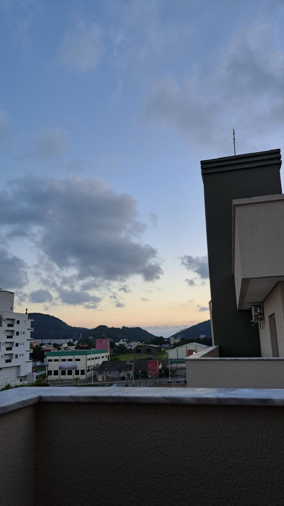
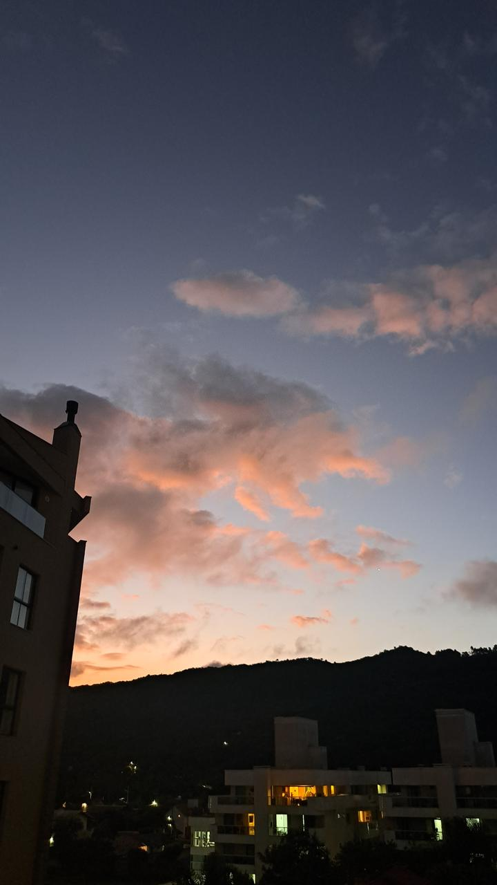

Atardecer en vacaciones

Esta foto fue sacada sobre un muelle durante unas vacaciones en Entre Rios, en Islas del Ibicuy. Se encuentra pasando en segundo puente Brazo Largo.
- Puesta del sol: 17:45
- Configuracion de la camara: ISO 64, 53 mm, 0 ev, f 1.78, 1/1543 s

Esta foto fue sacada sobre la bahia "punta chica", en Mar del Plata
- Puesta del sol: 19:47
- Configuracion de la camara: ISO 200, 24 mm, -1.1 ev, f 1.8, 1/25 s


Estas fotos fueron sacadas durante unas vacaciones en Brasil, en Bombinhas. Bombinhas es un municipio de Brasil del estado de Santa Catarina. Tiene una poblacion estimada de 25 mil habitantes. Se encuntra sobre una altitud total de 35.143 km2.